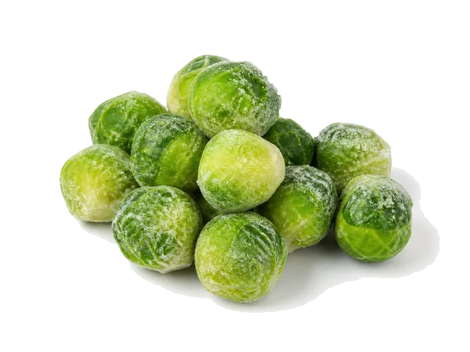

Warzywa
Brukselka mrożona
Brukselka mrożona: 3.4 g białka, 43 kcal, 9 g węglowodanów i 0.3 g tłuszczu na 100 g. Kategoria: Warzywa.
Kalorie43 kcalna 100 g
Białko / proteiny3.4 g
Węglowodany9 g
Tłuszcz0.3 g
Cena (szac.)~0,93 złza 100 g
Ceny zaktualizowano: maj 2026 (szacunek — ceny w popularnych supermarketach)
Porcja: porcja (200g)
| Kalorie | 86 kcal |
|---|---|
| Białko | 6.8 g |
| Węglowodany | 18 g |
| Tłuszcz | 0.6 g |
| Cena (szac.) | ~1,85 zł |
Szczegółowe składniki odżywcze na 100 g
| Wartość energetyczna (kalorie) | 43 kcal |
|---|---|
| Białko (proteiny) | 3.4 g |
| Węglowodany | 9 g |
| Tłuszcz | 0.3 g |
| Tłuszcze nasycone | 0.1 g |
| Tłuszcze nienasycone | 0.2 g |
| Witaminy i minerały (skrót) | Witamina K, Witamina C, Witamina A |
| Współczynnik kcal / 1 g białka | 12.6 |
| Cena produktu (szac. za 100 g) | ~0,93 zł |
| Cena za 100 g białka (szac.) | ~27,21 zł |
Witaminy i minerały na 100 g
Ilość w 100 g produktu oraz orientacyjny % dziennego zapotrzebowania (RDA) dla dorosłej osoby. Żelazo wg normy dla kobiet; sód jako % limitu. Wartości typowe (USDA / tabele żywieniowe / etykiety) — mogą się różnić między markami.
-
Witamina A 80 µg
-
Witamina C 25 mg
-
Witamina E 0.5 mg
-
Witamina K 40 µg
-
Witamina B1 (tiamina) 0.05 mg
-
Witamina B6 0.1 mg
-
Witamina B9 (foliany) 40 µg
-
Wapń 20 mg
-
Żelazo 0.8 mg
-
Magnez 20 mg
-
Fosfor 40 mg
-
Potas 280 mg
-
Miedź 60 µg
-
Mangan 0.2 mg